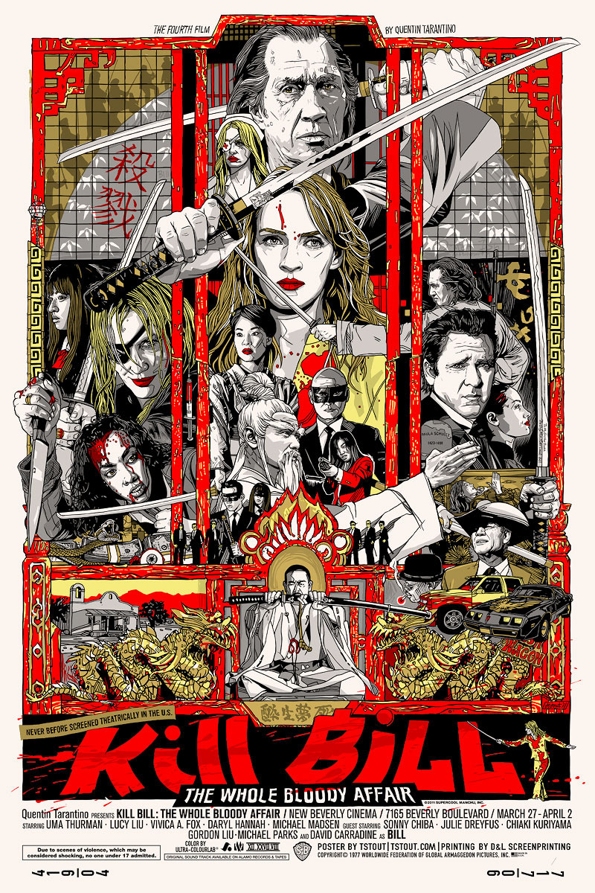
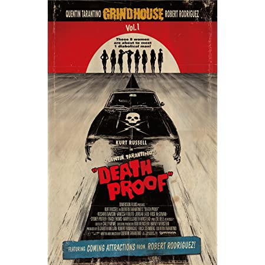

Later Indie Films
Kill Bill Series
Kill Bill Volume 1 and 2 were released a year apart, and were filmed back to back. This film once again won audiences over with the incredibly complex choreographed action scenes, beautiful color schemes, and once again a perfect soundtrack and script, as well as an unforgettable set of characters. The films cost about $60 million collectively to make, but the film combine grossed about $333.1 million!
Deathproof
His last indie film he made was Deathproof which is still regarded as one of his most outrageous and risky film to date. This film featured a female stunt double to carry the film as the lead in the latter half of the film. This film was also the second part of a two part movie project that he and his good friend and filmmaker Robert Rodriguez were working on. While the films have nearly no correlation with each other, they are both slasher films they both desperately wanted to make. While the film is extremely well known, this film has a massive cult following, even thought film was made on a $30 million budget and only made $30.7 million.